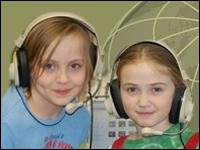

Polar Remote Sensing: Polar Remote Sensing is an Undergraduate Education Resource that has been rated as an "Outstanding Education Product" by NASAs education product review panel. It presents information about the International Polar Year (2007-2009), and includes a case study on how to use remote sensing data to map changes in a selected Alaska glacier. The case study includes data and recommended introductory teaching material.
Polar Remote Sensing: Polar Remote Sensing is an Undergraduate Education Resource that has been rated as an "Outstanding Education Product" by NASAs education product review panel. It presents information about the International Polar Year (2007-2009), and includes a case study on how to use remote sensing data to map changes in a selected Alaska glacier. The case study includes data and recommended introductory teaching material.
Summer Teachers Training Course: I designed and taught "GIS and GPS for Alaska School Teachers" in summer 2004 and summer 2005. The target audience for this two week course was Alaska's grade 8-12 science and geography teachers. The course introduced the basic principles and provided hands on experience in GPS measurements, Geographic Informations Systems (GIS) and map making. It formed the basis for the NSF-GeoEd funded EDGE program.
EDGE: Experiential Discoveries in Geoscience Education (EDGE) was an NSF funded program that provided a year of Geoscience experience for 34 in-service secondary school teachers in Alaska and their students. Teachers increased their Earth science content knowledge through lectures and field experiences. They gained skills in using ArcGIS for computer based mapping, and carried out mapping projects of local significance. The program had a large impact in several remote schools in Alaska.
AMIDST: Attracting Minorities to Geosciences through Involved Digital Story Telling (AMIDST) is a project funded by the Geoscience Directorate of the National Science Foundation (NSF), through their program entitled Opportunities for Enhancing Diversity in Geosciences (OEDG). This project is meant to test an innovative idea of integrating place-based geoscience education with culturally sensitive digital story telling, to engage and attract Alaska’s native and rural children from grades 3 through 5 to geosciences.
Alaska Volcano Explorer: This web site has lots of photos, videos, and scientific information on Alaska's volcano. It also includes quizzes, simple math problems, and a glossary. The site is tailored for two different student levels. (1) kindergarten through grade 3; (2) grades 4 through 6. The site was conceived by UAF graduate student Leslie Almberg. The teachers resource section of this site is particularly useful. Caution: One may get a bit lost in the navigation through the main site and some links may not work.
Treaure Hunt in Alaska: This is a web based story to introduce the concepts of radar remote sensing and Earth science to students from grades 3-5. Children search for lost treasure, and in the process learn about satellites and how to interpret radar images. The story is enriched by original water color illustrations by Aradhana Gupta. Teachers can freely download the entire story and use it offline in their classrooms. This is a NASA reviewed and approved educational product.
Alaska: A Bird's Eye View: This is the first web based story that I wrote to introduce facts about Alaska and the concepts of Remote Sensing to students from grades 4-5. An interactive page that teachers report to be especially interesting and useful is one where the size of individual US states is compared with the size of Alaska. The site is free for teachers to download and use, and is a part of NASA's reviewed educational product collection.